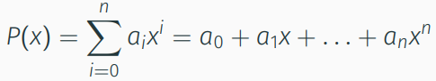

Mathe Klausur
Polynome
Ein Polynom n-ten Grades ist eine Funktion P: ℝ->ℝ der Form

Eigenschaften
- Ein Polynom mit nur geraden Exponenten heißt gerade: P(-x) = P(x)
- Ein Polynom mit nur ungeraden Exponenten heißt ungerade: P(-x) = -P(x)
- Ein Polynom vom Grad n hat höchstebs n reelle Nullstellen
siehe auch Vorlesung 8